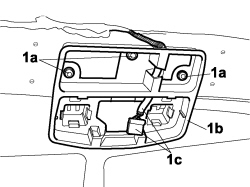

7040E57 FRONT MODULAR CURTESY LIGHT UNIT MOUNT R R WITH CEILING LINING REMOVED
- Path
- Procedures > 70 FITTINGS > 7040 BODY INTERIOR FITTINGS AND TRIM > 7040E INTERIOR COURTESY LIGHT SYSTEM > 7040E57 FRONT MODULAR CURTESY LIGHT UNIT MOUNT R R WITH CEILING LINING REMOVED
- Kind
- repair procedure (removal / refitting; the operation number is the code)
- Applies to
- all engines; all production periods
- Interactive page
- https://sloeber94.github.io/elrnDB-fCrm/en/#/194001057
Applies to: all engines; all production periods
 Removing
Removing
 Refitting
Refitting1. Undo the three bolts (1a) and remove the courtesy light mounting (1b) releasing the electrical wiring (1c) from the recess.

Applies to: all engines; all production periods
Refitting
Removing- Place the courtesy light mounting in position fitting the electrical wiring in the recess.
- Tighten the retaining bolts.